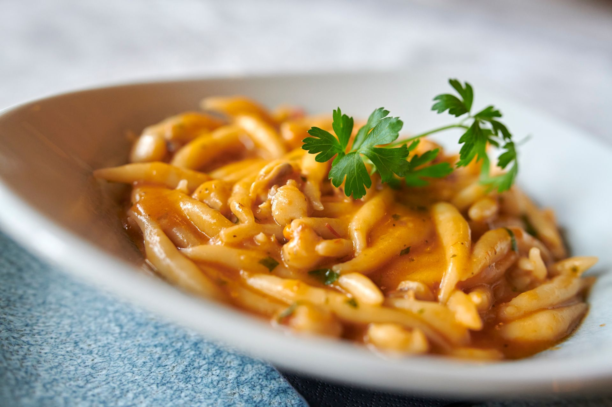

Pljukanci

Descriotion
In times of scarcity in Istria, pljukanci were prepared daily because they require simple ingredients, and today they are considered a real delicacy served with various types of sauces.
In Istria, we prefer to combine them with seasonal foods such as asparagus, porcini mushrooms, truffles or with goulash, olive oil and sheep's cheese.
Ingredients
- 400 g smooth flour
- 2 teaspoons of salt
- 2 tablespoons of olive oil
- 300 ml of hot water
Steps
- Knead the dough from flour, salt, olive oil and boiling water with a food processor, and when the dough cools down a little, continue kneading with your hands. When you have kneaded it, wrap the dough in transparent film and let it rest for 15 minutes.
- Transfer the dough to a floured work surface. Divide it into 4 parts. Roll each part into a long roll with your hands. Cut small pieces of dough with a knife, from which you will make 1-2 cm spits between your fingers and palms. Spits are thicker in the middle and thinner towards the ends.
- Boil them in salted boiling water until they float on the surface.